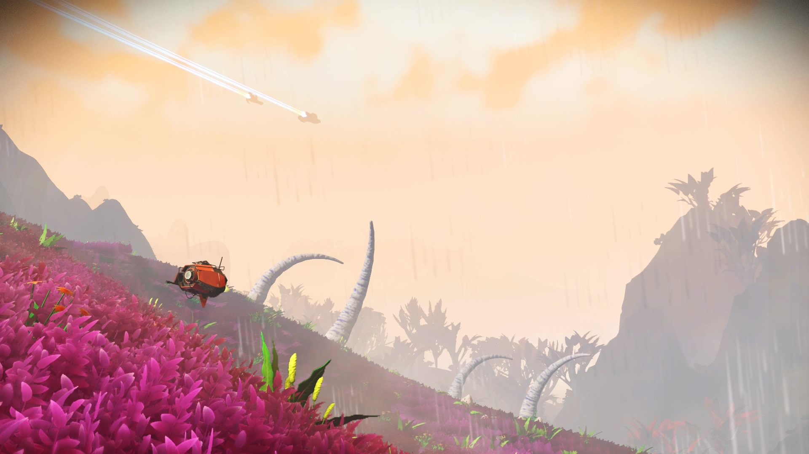

Welcome Interloper, to
The Galatic Hub
The Galactic Hub is a location in the PC and PS4 video game, No Mans Sky. Our goal is to provide a massive network of mapped out planets and systems, all to share and use with others. This website will provide you with plenty of info about the hub, in many different categories.
If you are looking for the Amino Hub, our sister site, go here. If you aren't familiar with either, we'll show what the hub is all about below!
Advantages
So why should you join the Galactic Hub project? Well, lets look at some of the advantages!
- Attractive Planets
- Mapped Out Areas
- Common List of Freighters, Ships, and Multi-Tools
- Rare Resources are located with a simple search term
- You get to visit other player's bases, all easily located!
Still not convinced? We'll let the videos and pictures do the talking.
Attractions
Enjoy some views at the El Lazo Lodge, in the Hub. Provided by AndyKrycek6.
The Hub is filled with Diplos, a rare type of animal. This one in particular was spotted by OhLookItsChris79.

The Hub's large playerbase allows for people to find unique and interesting gear. Here is a ship that TheMarco somehow managed to find!
Finally, we have a beautiful picture from Smeermont of one of the planets he found.

Resource Locations
In No Mans Sky, there are plenty of extremely rare resources that most players will encounter only rarely. Some resources are limited to certain star systems or planets, so it can make finding that one material you need frustrating. With the hub, plenty of planets with rare materials have been mapped out, allowing you to locate them easily. You won't stress about finding Riggogen ever again, because someone says you're two branches below a planet with plenty of it! We'll put out some planets that have rare materials below, in the form of community farms.
Insulating Gel
HUB10- on Planet "Valhalla Alpha" [PS4]
HUB-G-1E6 Dancing Bear on Planet "Holly's Blue Moon Paradise" [PS4]
HUB-V-203 Moriyatamu XII on Planet "Koogisaja Oiganq"
Candesium
Linskyviumpi System, Planet "Yes You Can" (0469:0082:0D6D:002B) [PS4]
HUB4-K-199 Cold Sun, on Planet "Snowball Earth" [PC]
Coryzagen
HUB3-V-A GlassShop on Planet "Glass Shop" [PS4]
HUB-G-2-F Antoseigel on Planet "SnowGlobe Glass Farm" [PC]
Spadonium
HUB-K-FE Faith on Planet "Sojainnedy Kibits" (Bonus Trade Terminal) [PS4]
HUB-V-203 Moriyatamu XII on Planet "Koogisaja Oiganq" (Technically an Insulating Gel farm, but it contains Spadonium) [PC]
Gravitino Orbs
HUB-V-158 Todoroki on Planet "Bakugo" [PS4]